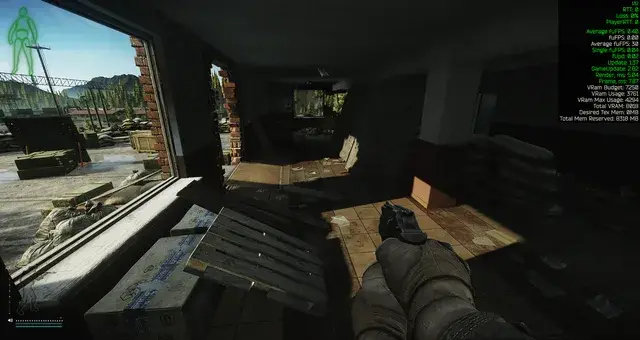
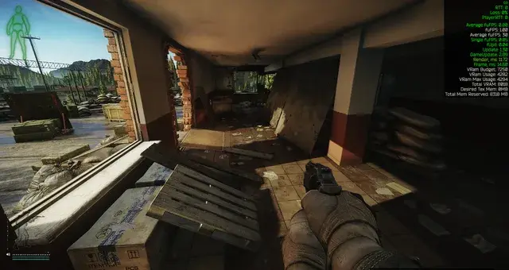

Mod
SEGI
- Downloads
- 2,288
- Favourites
- 10
- Mod lists
- 5
Global illumination system SEGI in THE CITY.
This mod will halve your FPS, and has frequent artifacts and flicker. More usable for pretty screenshots than actual gameplay, but you do you. In F12 config there are a billion sliders you can tweak to your liking, maybe even could get to a decent framerate while not looking like ass.
Press
PgUpto quickly toggle on/off SEGI.


Known issues:
- light bleeds through walls and ceilings in a lot of places.
- conflicts with THE CITY’s culling. some interior places get lit as if outside. especially gnarly in reserve underground, terrain gets culled and doesn’t block tracing light as it should resulting in wrong lighting
- won’t work on laboratory and labyrinth (need main light source)
- limited render distance. indirect lighting and reflections get visibly cut off, noticeable when moving
- inside interchange mall or any building with high ceilings the voxel space gets cutoff too soon before reaching ceiling, reflections start rendering the sky instead of a ceiling, looks wrong. can be alleviated by increasing the voxel space (which reduces detail), lowering sky intensity for reflections (then reflections will look too dark outside), or turning off reflections altogether (render only indirect bounce, less pretty)
Version
0.1.0
SPT ~4.0.0
Fika: compatible
2,288 downloads1.1 MB
release
VirusTotal: report 1